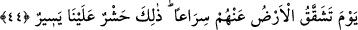

tekid, ihtisas ve yalnızlığı bildirmek içindir.
Kâşifî şöyle der: Yani dünyada ölü halde bulunan nutfeye hayat veririz, sonra onu
öldürürüz.
“Dönüş de ancak bizedir.” Yani âhirette karşılığını vermek üzere dönüş bizedir,
başkasına değildir. Başkaları bize bu hususta ne ortak olabilir, ne de tek başlarına
karşımıza çıkabilir. Onlar bizimle karşılaşmaya hazır olsunlar. Bu âyette, zikir
vakitlerinin ardından, yakın bir yer olan kalpten gelecek ğaybî hâtiflere, Rabbânî
ilhamlara ve ilâhî işâretlere kulak vermek üzere kalpleri murâkabe etmeye bir işâret
vardır. Nefislerin Hak cânibinden sıfatlarının tecellîsi yoluyla gelen çığlığı işitecekleri
gün, beşeriyetin karanlıklarından rûhâniyet ve rabbâniyetin nuruna çıkılacak gündür. İşte
biz, ölü kalpleri diriltir ve diri kalpleri de öldürürüz. Nefsi ölen ve kalbi diri olanlar
için dönüş bizedir.
Şunu bil ki; haşrin bir genel olanı vardır. Bu haşr, neşr gününde vücudların/cesetlerin
kabirlerden çıkarak mahşere gelmeleridir. Bir de özel haşr vardır ki bu da uhrevî
ruhların dünyevî cisimlerinden henüz hayatta iken seyr u süluk ile çıkarak ruhânî âleme
gelmeleridir. Bu, zorunlu olarak yaşanan ve hayvânî suretin kaybedildiği ölümden önce
hayvânî-nefsânî sıfatlardan iradi olarak ayrılmak suretiyle yaşanan ölümdür. Bir de
daha da özel olan haşr vardır ki bu da rûhânî enâniyet kabirlerinden rabbânî hüviyete
çıkmaktır. Aynı şekilde ölüm de zorunlu ve ihtiyârî olmak üzere iki nev’idir. Yine
doğumun Allah Teâlâ’nın yaratmasıyla gerçekleşen ve kulun kesb ve ihtiyârının dahlinin
söz konusu olmadığı zorunlu nev’i olduğu gibi bir de ihtiyârî olan nev’i vardır. Kesb ile
elde edilen ihtiyârî doğum, Hz. Îsâ’nın (a.s.) “İki kez doğmayan kişi semâvâtın
melekûtuna nüfuz edemez” sözüyle işâret ettiği doğum nev’idir.
44. O gün yer yarılır, onların üzerinden süratle yarılıp açılır. Bu, bize göre kolay
olan bir haşirdir.
Tâcü’l-masâdır’da şöyle geçer: O gün yer yarılır, yırtılır. O günü hatırla ki yer yarılır
ve insanlardan uzak olur, yani ölüler kabirlerinden dışarı çıkarlar, uzaklaşırlar.
“Sirâan” hızlıca anlamına gelir. Sürat, yavaşlığın zıddı olup cisimler ve fiiller
hakkında kullanılır. Âyetteki anlamı, bu kimselerin sağa sola bakmadan dâvet edene
icabet etmek üzere hızlıca koşmalarıdır. Yani onlar, sura üfleyen meleğin çağrısına itâat
eder vaziyette dâvete boyun eğerler.
“Bu, bize göre kolay olan bir haşirdir.”
“Haşr” dirilme, toplanma ve sevk edilme demektir. Bu, bizim için kolaydır; ol deriz
ve olur. Bu ibâre, kâfirlerin “Bu, gerçekleşmesi çok uzak (imkansız) olan bir
dönüştür” (Kàf, 50/3) sözlerine karşılık söylenmiştir. Âyetteki “aleynâ” ifadesinde car-